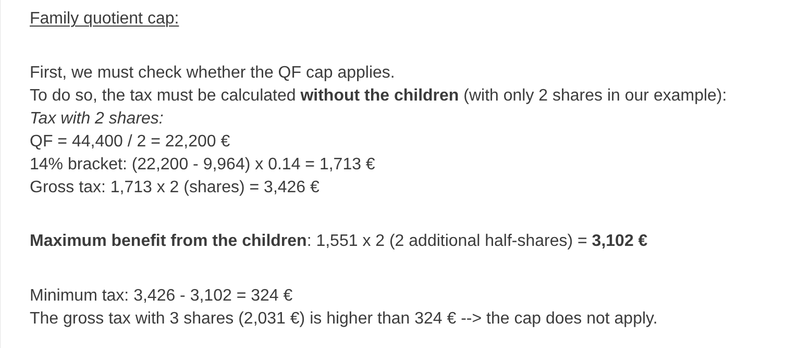

4. Exercício de aplicação – Versões 1 e 2
4.1. O problema

A tabela acima (uma página francesa do lefigaro.fr) é usada para calcular o imposto no caso simplificado de um contribuinte que tem apenas o salário a declarar. Como indicado na nota (1), o imposto calculado dessa forma é o imposto antes de três ajustes:
- o teto do quociente familiar, que se aplica a rendas elevadas;
- o desconto e a redução que se aplicam a contribuintes de baixa renda.
Assim, o cálculo do imposto envolve as seguintes etapas [http://impotsurlerevenu.org/comprendre-le-calcul-de-l-impot/1217-calcul-de-l-impot-2019.php]:

Propomos escrever um programa para calcular o imposto de um contribuinte no caso simplificado de um contribuinte que tem apenas um único salário a declarar. As regras usadas são as do imposto de 2019 sobre a renda de 2018. Elas servirão de fio condutor ao longo deste documento: o algoritmo permanecerá o mesmo nas diferentes versões da aplicação; apenas sua arquitetura mudará.
4.1.1. Cálculo do imposto bruto
O imposto bruto pode ser calculado da seguinte forma.
Primeiro, calcula-se o número de partes do contribuinte:
- cada genitor contribui com 1 parte;
- os dois primeiros filhos contribuem, cada um, com 1/2 parte;
- os filhos seguintes contribuem, cada um, com uma parte.
O número de partes é, portanto:
- nbShares = 1 + nbChildren * 0.5 + (nbChildren - 2) * 0.5 se o empregado for solteiro;
- nbShares = 2 + nbChildren * 0.5 + (nbChildren - 2) * 0.5 se for casado;
onde nbChildren é o número de filhos, e o termo (número de filhos - 2) * 0.5 se aplica apenas quando há três ou mais filhos. Em seguida:
- calcula-se a renda tributável R como R = 0.9 * S, onde S é o salário anual;
- calcula-se o quociente familiar QF = R / nbShares.
- calcula-se o imposto bruto I com base nos seguintes dados (2019):
field1 (limite para o QF) | field2 (coeffR) | field3 (coeffN) |
9964 | 0 | 0 |
27,519 | 0.14 | 1,394.96 |
73,779 | 0.3 | 5,798 |
156,244 | 0.41 | 13,913.69 |
0 | 0.45 | 20,163.45 |
Cada linha tem 3 campos: field1, field2, field3. Para calcular o imposto I, procura-se a primeira linha em que QF <= field1 e usam-se os valores dessa linha. Por exemplo, para um empregado casado com dois filhos e um salário anual S de 50.000 euros:
- renda tributável: R = 0.9 * S = 45.000;
- número de partes: nbShares = 2 + 2 * 0.5 = 3;
- quociente familiar: QF = 45.000 / 3 = 15.000.
A primeira linha em que QF <= field1 é a seguinte:
O imposto I é então igual a 0.14*R – 1.394,96*nbShares=[0.14*45000-1394.96*3]=2.115. O imposto é arredondado para baixo, para o euro inteiro.
Se a condição QF <= field1 for satisfeita já a partir da primeira linha, o imposto é zero.
Se QF for tal que a condição QF <= field1 nunca é satisfeita, usam-se os coeficientes da última linha. Neste caso:
o que resulta no imposto bruto I = 0.45*R – 20.163,45*nbShares.
4.1.2. Teto do quociente familiar

Para determinar se o teto do quociente familiar QF se aplica, recalcula-se o imposto bruto sem contar os filhos. Novamente, para o empregado casado com dois filhos e um salário anual S de 50.000 euros:
- renda tributável: R = 0.9 * S = 45.000;
- número de partes: nbShares = 2 (os filhos não são mais contados);
- quociente familiar: QF = 45.000 / 2 = 22.500.
A primeira linha em que QF <= field1 é a seguinte:
O imposto I é então igual a 0.14*R – 1.394,96*nbShares=[0.14*45000-1394.96*2]=3.510.
- Vantagem máxima ligada aos filhos: 1.551 * 2 = 3.102 euros;
- imposto mínimo: 3.510 – 3.102 = 408 euros.
O imposto bruto com 3 partes, já calculado em 2.115 euros, é superior ao imposto mínimo de 408 euros; portanto, o teto do quociente familiar não se aplica aqui.
Em geral, o imposto bruto é max(tax1, tax2), onde:
- [tax1]: é o imposto bruto calculado com os filhos;
- [tax2]: é o imposto bruto calculado sem os filhos e reduzido da vantagem máxima (aqui, 1.551 euros por meia parte) ligada aos filhos.
4.1.3. Cálculo do desconto

Novamente, para o empregado casado com dois filhos e um salário anual S de 50.000 euros:
O imposto bruto (2.115) da etapa anterior é inferior a 2.627 euros para um casal (1.595 euros para uma pessoa solteira): portanto, o desconto se aplica. Ele é calculado da seguinte forma:
- desconto = limite (casal=1.970 / solteiro=1.196) - 0.75 * imposto bruto;
- desconto = 1.970 – 0.75 × 2.115 = 383,75, arredondado para 384 euros;
- novo imposto bruto = 2.115 – 384 = 1.731 euros.
4.1.4. Cálculo da redução

Abaixo de um certo limite, uma redução de 20% é aplicada ao imposto bruto resultante dos cálculos anteriores. Em 2019, os limites são os seguintes:
- solteiro: 21.037 euros;
- casal: 42.074 euros (o valor 37.968 usado no exemplo acima parece estar incorreto).
Esse limite é acrescido do valor: 3.797 * (número de meias partes contribuídas pelos filhos).
Novamente, para o empregado casado com dois filhos e um salário anual S de 50.000 euros:
- sua renda tributável (45.000 euros) está abaixo do limite (42.074 + 2 × 3.797) = 49.668 euros;
- ele tem, portanto, direito a uma redução de 20% em seu imposto: 1.731 * 0.2 = 346,2 euros, arredondado para 347 euros;
- o imposto bruto do contribuinte passa a ser: 1.731 – 347 = 1.384 euros.
4.1.5. Cálculo do imposto líquido
Nosso cálculo termina aqui: o imposto líquido devido será de 1.384 euros. Na realidade, o contribuinte pode ter direito a outras deduções, em particular por doações a organizações de interesse público ou de interesse geral.
4.1.6. Contribuintes de alta renda
Nosso exemplo anterior se aplica à maioria dos empregados. No entanto, o cálculo do imposto é diferente para contribuintes de alta renda.
4.1.6.1. Teto da dedução de 10% sobre a renda anual
Na maioria dos casos, a renda tributável é calculada pela fórmula: R = 0.9 × S, onde S é o salário anual. Isso é chamado de dedução de 10%. Essa dedução tem um teto. Em 2019:
- ela não pode exceder 12.502 euros;
- ela não pode ser inferior a 437 euros.
Considere o caso de um empregado solteiro, sem filhos, com um salário anual de 200.000 euros:
- a dedução de 10% é de 200.000 euros > 12.502 euros. Ela é, portanto, limitada a 12.502 euros.
4.1.6.2. Teto do quociente familiar
Consideremos um caso em que se aplica o teto do quociente familiar descrito na seção “Teto do quociente familiar” acima: um casal com três filhos e uma renda anual de 100.000 euros. Vamos percorrer novamente as etapas do cálculo:
- a dedução de 10% é de 10.000 euros < 12.502 euros. A renda tributável R é, portanto, 100.000 – 10.000 = 90.000 euros;
- o casal tem nbShares = 2 + 0.5 × 2 + 1 = 4 partes;
- seu quociente familiar é, portanto, QF = R / nbShares = 90.000 / 4 = 22.500 euros;
- seu imposto bruto I1 com filhos é I1 = 0.14 × 90.000 − 1.394,96 × 4 = 7.020 euros;
- seu imposto bruto I2 sem filhos:
- QF = 90.000 / 2 = 45.000 euros;
- I2 = 0.3 × 90.000 − 5.798 × 2 = 15.404 euros;
- A regra do teto do quociente familiar estabelece que a vantagem obtida com os filhos não pode exceder (1.551 × 4 meias partes) = 6.204 euros. Ora, neste caso, I2-I1 = 15.404 – 7.020 = 8.384 euros, valor superior a 6.204 euros;
- O imposto bruto é, portanto, recalculado como I3 = I2-6204 = 15.404 - 6.204 = 9.200 euros.
Esse casal não receberá nem desconto nem redução, e seu imposto final será de 9.200 euros.
4.1.7. Valores oficiais
O cálculo do imposto é complexo. Ao longo deste documento, serão usados exemplos para ilustrar o processo. Os resultados oficiais são os do simulador da administração tributária de 2019 [https://www3.impots.gouv.fr/simulateur/calcul_impot/2019/simplifie/index.htm]:
Contribuinte | Resultados oficiais | Resultados do algoritmo do documento |
Casal com 2 filhos e renda anual de 55.555 euros | Imposto = 2.815 euros Alíquota = 14% | Imposto = 2.814 euros Alíquota = 14% |
Casal com 2 filhos e renda anual de 50.000 euros | Imposto = 1.385 euros Desconto = 384 euros Redução = 346 euros Alíquota = 14% | Imposto = 1.384 euros Desconto = 384 euros Redução = 347 euros Alíquota = 14% |
Casal com 3 filhos e renda anual de 50.000 euros | Imposto = 0 euros Desconto = 720 euros Redução = 0 euros Alíquota = 14% | Imposto = 0 euros Desconto = 720 euros Redução = 0 euros Alíquota = 14% |
Solteiro com 2 filhos e renda anual de 100.000 euros | Imposto = 19.884 euros Desconto = 0 euros Redução = 0 euros Alíquota = 41% | Imposto = 19.884 euros Sobretaxa = 4.480 euros Desconto = 0 euros Redução = 0 euros Alíquota = 41% |
Solteiro com 3 filhos e renda anual de 100.000 euros | Imposto = 16.782 euros Desconto = 0 euros Redução = 0 euros Alíquota = 41% | Imposto = 16.782 euros Sobretaxa = 7.176 euros Desconto = 0 euros Redução = 0 euros Alíquota = 41% |
Casal com 3 filhos e renda anual de 100.000 euros | Imposto = 9.200 euros Desconto = 0 euros Redução = 0 euros Alíquota = 30% | Imposto = 9.200 euros Sobretaxa = 2.180 euros Desconto = 0 euros Redução = 0 euros Alíquota = 30% |
Casal com 5 filhos e renda anual de 100.000 euros | Imposto = 4.230 euros Desconto = 0 euros Redução = 0 euros Alíquota = 14% | Imposto = 4.230 euros Desconto = 0 euros Redução = 0 euros Alíquota = 14% |
Solteiro, sem filhos, com renda anual de 100.000 euros | Imposto = 22.986 euros Desconto = 0 euros Redução = 0 euros Alíquota = 41% | Imposto = 22.986 euros Sobretaxa = 0 euros Desconto = 0 euros Redução = 0 euros Alíquota = 41% |
Casal com 2 filhos e renda anual de 30.000 euros | Imposto = 0 euros Desconto = 0 euros Redução = 0 euros Alíquota = 0% | Imposto = 0 euros Desconto = 0 euros Redução = 0 euros Alíquota = 0% |
Solteiro, sem filhos, com renda anual de 200.000 euros | Imposto = 64.211 euros Desconto = 0 euros Redução = 0 euros Alíquota = 45% | Imposto = 64.210 euros Sobretaxa = 7.498 euros Desconto = 0 euros Redução = 0 euros Alíquota = 45% |
Casal com 3 filhos e renda anual de 200.000 euros | Imposto = 42.843 euros Desconto = 0 euros Redução = 0 euros Alíquota = 41% | Imposto = 42.842 euros Sobretaxa = 17.283 euros Desconto = 0 euros Redução = 0 euros Alíquota = 41% |
No exemplo acima, a “sobretaxa” designa o valor adicional pago por contribuintes de alta renda em razão de dois fatores:
- o teto da dedução de 10% sobre a renda anual;
- o teto do quociente familiar.
Esse indicador não pôde ser verificado, pois o simulador da administração tributária não o fornece.
Vemos que o algoritmo do documento calcula o valor correto do imposto todas as vezes, embora com uma margem de erro de 1 euro. Essa margem de erro decorre de arredondamentos. Todos os valores monetários são arredondados, às vezes para cima, até o euro seguinte, às vezes para baixo, até o euro inteiro. Como o autor desconhece as regras oficiais de arredondamento, os valores monetários no algoritmo do documento foram arredondados:
- para cima, até o euro seguinte, no caso de descontos e reduções;
- para baixo, até o euro inteiro, no caso de sobretaxas e do imposto final.
Na próxima seção, serão realizados testes para verificar a validade dos resultados. Esses testes serão feitos com os exemplos da tabela anterior, com uma margem de erro aceita de 1 euro.
4.2. A estrutura de diretórios dos scripts
As duas primeiras versões da aplicação estão na pasta [scripts-console/tax]:
A título de referência, o arquivo [verified-results.txt] contém os resultados obtidos com o simulador oficial para os contribuintes do arquivo [taxpayersdata.txt].
4.3. Versão 1
4.3.1. O algoritmo
Apresentamos um primeiro programa em que:
- os dados necessários para calcular o imposto estão fixos no programa, na forma de arrays e constantes;
- os dados dos contribuintes (estado civil, filhos, salário) são armazenados em um primeiro arquivo de texto, [taxpayersdata.txt];
- os resultados do cálculo do imposto (estado civil, filhos, salário, imposto etc.) são armazenados em um segundo arquivo de texto, [results.txt].
O arquivo de dados [taxpayersdata.txt] (casado, filhos, salário) é o seguinte:
O programa principal do script [version-01/main.php] é o seguinte:
Comentários:
- linha 4: exigimos o respeito estrito aos tipos dos parâmetros e dos valores de retorno das funções;
- Linhas 7 a 16: definição de todas as constantes necessárias ao cálculo do imposto. A palavra-chave [const] define uma constante global, acessível em todo o script, inclusive dentro de funções. O curso de PHP 7 usava a função [define("HALF_SHARE_QF_CEILING", 1551)], que faz a mesma coisa e ainda existe. [const] é mais legível e permite que o editor verifique os nomes das constantes. Por convenção, os nomes de constantes são escritos em maiúsculas;
- linha 19: o nome do arquivo de texto que contém os dados dos contribuintes (estado civil, filhos, salário);
- linha 20: o nome do arquivo de texto que contém os resultados do cálculo do imposto;
- linhas 21 a 23: as três tabelas de dados que definem as diferentes faixas usadas no cálculo do imposto. São as três colunas da tabela da seção “Cálculo do imposto bruto”;
- linhas 26 a 30: abre o arquivo de dados dos contribuintes para leitura usando [r]. A função [is_readable] verifica primeiro se o arquivo existe e pode ser lido: caso contrário, [$data] recebe o valor [false]. Isso evita o aviso que [fopen] emitiria se o arquivo estivesse ausente. A função [fopen] também retorna o valor [false] se o arquivo não puder ser aberto;
- linhas 33 a 37: abre o arquivo de resultados para escrita usando [w];
- linhas 40 a 54: laço para ler as linhas (casado, filhos, salário) do arquivo de dados dos contribuintes;
- linha 40: a função [fgets] lê até 100 caracteres e para no primeiro marcador de fim de linha encontrado. Aqui, todas as linhas têm menos de 100 caracteres. Se um caractere de fim de linha for encontrado, ele é incluído na string retornada. Quando o fim do arquivo é alcançado, a função [fgets] retorna o valor [false];
- linha 42: o caractere de fim de linha é removido. O arquivo [taxpayersdata.txt] foi criado no Windows: suas linhas terminam com os dois caracteres \r\n;
- linha 44: os componentes (casado, filhos, salário) da linha são recuperados. São três strings;
- linhas 45 a 47: o estado civil é convertido em minúsculas, e o número de filhos e o salário são convertidos em inteiros. Essas conversões explícitas são necessárias: no modo estrito, a função [calculateTax] não aceitaria a string "2" para seu parâmetro [int $children];
- linha 49: o imposto é calculado. O resultado é retornado como um array associativo. Observe que o salário, um [int], é passado ao [float $salary], parâmetro da função [calculateTax]: essa é a única conversão permitida no modo estrito;
- linha 51: as chaves [married, children, salary] são adicionadas ao início do array recuperado anteriormente. O operador + aplicado a dois arrays associativos retorna um array contendo os elementos de ambos;
- linha 52: o resultado é armazenado no arquivo de resultados como uma string JSON, com uma linha por contribuinte;
- linhas 56 e 57: depois que o arquivo de dados dos contribuintes foi totalmente processado, os arquivos são fechados;
- linha 64: a função que remove o caractere de fim de linha de uma linha da string [$line]. O caractere de fim de linha é a string "\r\n" em sistemas Windows e "\n" em sistemas Unix. O resultado é a string de entrada sem o caractere de fim de linha.
A função [calculateTax] é a seguinte:
Comentários:
- Linha 81: o imposto bruto é calculado incluindo os dependentes. O resultado tem a forma [["tax" => $tax, "surcharge" => $surcharge, "rate" => $coeffR[$i]]], onde:
- [tax]: o imposto bruto;
- [surcharge]: o valor da sobretaxa, se houver. Ela se aplica quando a dedução de 10% excede o limite de 12.502 euros;
- [rate]: a alíquota do contribuinte;
- linha 82: o imposto bruto [$tax1] devido;
- linhas 84 e 85: se o contribuinte tem pelo menos um filho, o cálculo do imposto é refeito com os mesmos dados, mas supondo 0 filhos. Esse segundo cálculo é necessário para determinar se a redução de imposto decorrente de ter filhos excede um certo limite;
- linha 86: o imposto bruto [$tax2] devido;
- linhas 88 a 94: para o imposto bruto [$tax2], os filhos agora são levados em conta: cada meia parte contribuída pelos filhos resulta em uma redução de [HALF_SHARE_QF_CEILING] euros. Os dois primeiros filhos contribuem com meia parte cada um; os filhos seguintes contribuem com uma parte inteira, ou seja, duas meias partes;
- linhas 96 e 97: caso em que o contribuinte não tem filhos. Nesse caso, calcular [$tax2] é desnecessário. Ele é igual a [$tax1];
- linhas 100 a 108: dois valores de imposto bruto foram calculados: [tax1, tax2]. A administração tributária retém o maior dos dois. Isso resulta em um imposto bruto de [$tax];
- linhas 110 e 111: o valor bruto [$tax] pode ser objeto de um desconto;
- linhas 113 e 114: o valor bruto [$tax] pode ser objeto de uma redução;
- Linhas 116 a 122: [$tax] é agora o imposto líquido a pagar. Os resultados são retornados. Os cálculos foram feitos com números reais ([float]): as funções [floor] (arredondamento para baixo até o inteiro) e [ceil] (arredondamento para cima até o inteiro) também retornam números reais. Convertemos os valores em inteiros com [(int)] para que apareçam sem parte decimal. A alíquota continua sendo um número real.
A função [calculateTax2] é a seguinte:
Comentários:
- Aqui, o imposto é calculado usando a chamada tabela progressiva do imposto;
- linhas 134 a 142: cálculo do número de partes do contribuinte;
- linha 145: a renda tributável é calculada por meio de uma função. Como vimos, ela nem sempre é 0.9*annualSalary. A dedução de 10% é, na verdade, limitada a 12.502 euros;
- linha 147: cálculo de uma eventual sobretaxa se a renda tributável exceder 0.9*annualSalary;
- Linhas 149 a 151: corrige o fato de que, devido a erros de arredondamento, o resultado às vezes é [$surcharge=-1];
- linha 153: o quociente familiar;
- linhas 155 a 160: esse quociente é usado para determinar a faixa de tributação do contribuinte. Procuramos o primeiro elemento de [$limits] que seja maior ou igual ao quociente. O quociente foi armazenado no último elemento de [$limits] (que era 0): o laço [while] para, portanto, nesse último elemento, no máximo. Como o array [$limits] foi passado por valor, essa modificação afeta apenas a cópia local da função;
- linha 164: uma vez determinada a faixa de tributação do contribuinte, seu imposto bruto pode ser calculado. A função [floor($x)] retorna o valor inteiro imediatamente inferior a [$x];
- linha 166: as informações calculadas são retornadas.
A função [getTaxableIncome] é a seguinte:
Comentários:
- linha 174: a dedução padrão é de 10% do salário anual;
- Linhas 176 a 178: a dedução não pode exceder a dedução máxima [TEN_PERCENT_ALLOWANCE_MAX];
- linhas 180 a 182: a dedução não pode ser inferior à dedução mínima [TEN_PERCENT_ALLOWANCE_MIN];
- linhas 184 a 186: cálculo da renda tributável, arredondada para baixo até o euro inteiro com a função [floor].
A função [getDiscount] é a seguinte:
Comentários:
- linha 195: valor máximo do imposto bruto para ter direito a um desconto. Esse valor difere para contribuintes solteiros e casais;
- linha 196: se o contribuinte tem direito ao desconto;
- linha 200: a fórmula do desconto. [$discountCeiling] é o valor máximo do desconto. Esse valor máximo é calculado na linha 198. Novamente, ele depende da situação do contribuinte: casado ou solteiro;
- Linhas 202 a 204: o desconto não pode exceder o imposto bruto devido. É o caso, por exemplo, se [$taxes] for igual a 0;
- linhas 206 a 208: para evitar um desconto negativo;
- Linha 211: o desconto é arredondado para cima, até o euro seguinte.
A função [getReduction] é a seguinte:
Comentários:
- linhas 218 a 222: para ter direito a uma redução de imposto, a renda tributável (linha 224) deve ser inferior a um limite calculado aqui. Esse limite aumenta em [HALF_SHARE_REDUCTION_VALUE] para cada meia parte contribuída pelos filhos;
- linhas 227 a 230: se o contribuinte atende às condições, ele tem direito a uma redução de imposto de 20% (linha 229);
- linha 232: a redução é arredondada para cima, até o euro seguinte.
4.3.2. Resultados
Execute o script em um terminal aberto na pasta [version-01]:
O arquivo [results.txt] (casado, filhos, salário, imposto, sobretaxa, desconto, redução, alíquota) que contém os resultados é o seguinte:
Os impostos calculados (2814, 1384, 0, 19884, 16782, 9200, 4230, 22.986, 0, 64.210, 42.842) são os da coluna “Resultados do algoritmo do documento” da tabela de valores oficiais: coincidem, com diferença de até 1 euro, com os obtidos com o simulador da administração tributária. Observe que, na execução em PHP 7, os valores de [children] e [salary] eram strings (“2”, “55555”): a versão PHP 8 os converteu em inteiros antes do cálculo, e o arquivo JSON os grava como números.
4.3.3. Conclusão
O algoritmo de cálculo de impostos, mesmo nos casos considerados simples, é complexo. Não voltaremos a ele aqui. Nas diferentes versões, seu núcleo permanecerá o mesmo, apesar de algumas mudanças de apresentação. Comentaremos, portanto, apenas essas mudanças.
4.4. Versão 2
4.4.1. Mudanças
Na versão anterior, os dados necessários para calcular o imposto estavam fixos no código, como constantes e arrays. Esse método deve ser evitado. Na nova versão, esses dados são externalizados no arquivo JSON [taxadmindata.json] localizado ao lado do script:
O conteúdo do arquivo [taxadmindata.json] é o seguinte:
Ele contém as três tabelas [limits, coeffR, coeffN] e as constantes da versão 1, com os mesmos nomes.
A nova versão, [version-02/main.php], é a seguinte (as funções não mostradas têm o mesmo código da versão 1, exceto pelo parâmetro [$taxAdminData]):
1 2 3 4 5 6 7 8 9 10 11 12 13 14 15 16 17 18 19 20 21 22 23 24 25 26 27 28 29 30 31 32 33 34 35 36 37 38 39 40 41 42 43 44 45 46 47 48 49 50 51 52 53 54 55 56 57 58 59 60 61 62 63 64 65 66 67 68 69 70 71 72 73 74 75 76 77 78 79 80 81 82 83 84 85 86 87 88 89 90 91 92 93 94 95 96 97 98 99 100 101 102 103 104 105 106 107 108 109 110 111 112 113 114 115 116 117 118 119 120 121 122 123 124 125 126 127 128 129 130 131 132 133 134 135 136 137 138 139 140 141 | |
Comentários:
- linha 9: o nome do arquivo JSON que contém os dados da administração tributária;
- linhas 12 a 20: tenta-se ler o conteúdo do arquivo JSON chamado [$TAXADMINDATA]. A função [file_get_contents] retorna todo o conteúdo de um arquivo como string, e [false] se a operação falhar;
- linhas 22 a 32: se o arquivo foi lido com sucesso, usa-se a função [json_validate] (PHP 8.3) para verificar se ele contém dados JSON válidos e, em seguida, seu conteúdo é decodificado no array associativo [$taxAdminData];
- linhas 35 a 39: se ocorreu um erro em qualquer uma das duas operações anteriores, uma mensagem de erro é escrita no console e o programa termina;
- linha 67: a diferença em relação à versão 1 é que aqui os dados (arrays e constantes) da administração tributária ficam armazenados no array associativo [$taxAdminData], enquanto na versão 1 eles ficavam em arrays e constantes globais. É o caráter global dessas constantes que distingue as duas versões:
- na versão 1, as constantes eram acessíveis em todas as funções de [main.php];
- para obter o mesmo resultado na versão 2, é preciso passar o array associativo [$taxAdminData] como parâmetro a todas as funções que precisam dele: [calculateTax], [calculateTax2], [getTaxableIncome], [getDiscount] e [getReduction];
- Linha 91: a função [calculateTax] recebe o array [$taxAdminData] como primeiro parâmetro. Os arrays [limits, coeffR, coeffN] deixam de ser parâmetros; eles estão contidos em [$taxAdminData];
- Linhas 108 a 111: onde antes eram usadas constantes globais, agora é usado o conteúdo do array [$taxAdminData], recebido como parâmetro.
A função [calculateTax2] recupera as faixas de tributação do array [$taxAdminData] da mesma maneira:
- linhas 173 a 175: as três tabelas de faixas de tributação são recuperadas do dicionário [$taxAdminData]. O restante do código permanece inalterado.
As outras funções são reescritas da mesma maneira. Por exemplo, a função [getDiscount]:
A execução produz a seguinte saída:
e o seguinte arquivo [results.txt]:
Os resultados obtidos são os mesmos da versão anterior.
4.4.2. Conclusão
A versão 2 é muito mais flexível que a versão 1. Se, em outro ano, o algoritmo de cálculo do imposto permanecer o mesmo, mudam apenas as faixas de tributação e as constantes de cálculo. Basta atualizar o arquivo [taxadmindata.json]. Com a versão 1, é preciso entrar no código para modificar as faixas de tributação e as constantes de cálculo. Ora, é provável que as pessoas que precisam alterar os valores das faixas e das constantes não tenham acesso ao código do algoritmo.
A versão 2, porém, tem uma falha: o array [$taxAdminData] precisa ser passado a todas as funções, e não há garantia de que ele realmente contenha todas as chaves esperadas. Um erro de digitação em uma chave do arquivo JSON só seria detectado quando o cálculo fosse realizado. A versão 3 armazenará esses dados em um objeto da classe [TaxAdminData], cujas propriedades são declaradas e tipadas.